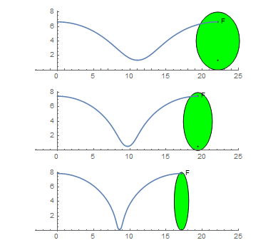
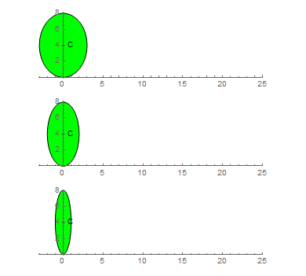

An ellipse $E(a, b)$ is given at its initial position by equation:
$\frac {x^2} {a^2} + \frac {(y - b)^2} {b^2} = 1$
The ellipse rolls without slipping along the $x$ axis for one complete turn. Interestingly, the length of the curve generated by a focus is independent from the size of the minor axis:
$F(a,b) = 2 \pi \max(a,b)$

This is not true for the curve generated by the ellipse center. Let $C(a, b)$ be the length of the curve generated by the center of the ellipse as it rolls without slipping for one turn.

You are given $C(2, 4) \approx 21.38816906$.
Find $C(1, 4) + C(3, 4)$. Give your answer rounded to $8$ digits behind the decimal point in the form ab.cdefghij.